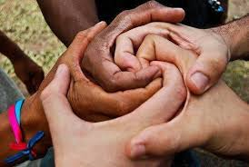

| 1.Nyumbani | 2.Utangulizi |
| 3.Vikwazo | 4.Tufanyaje? |
| 5.UKIMWI | 6.Maambukizi |
| 7.Kinga | 8.Hatua |
| 9.kuishi na UKIMWI | |
Mara tu baada ya mtu kuaathirika na virusi vya UKIMWI, ni muhimu kwake kuulinda mwili wake . Ili mtu mwenye virusi vya UKIMWI aweze kuishi muda mrefu na mwenye afya anapaswa afuate mambo yafuatayo:
1. Kufanya mazoezi:
Ni muhimu kwa mtu aliyeathirika na aliyekuwa hajaathirika na virusi vya UKIMWI kufanya mazoezi ya viungo vya mwili kila siku japo kwa uchache wa nusu saa.
Mazoezi yanamsaidia binadamu kuboresha afya ya mwili wake.
2. Kula chakula bora:
Mara nyingi virusi vya UKIMWI husababisha upungufu wa uzito wa mwili na hata afya ya mtu aliyeathirika na virusi hivyo hudhoofu, pia hata ukuaji wa mtoto aliyeathirika huwa si wenye kuridhisha.
Kwa hiyo watu hawa wanashauriwa kula mlo kamili (Mlo wenye virutubisho vyote vyenye kujenga mwili), kwani husaidia chembechembe za damu kuwa imara na kuufanya mwili uwe na afya nzuri.
3. Kunywa maji safi na salama:
Kunywa maji safi na salama ni sababu moja wapo ya kuufanya mwili ufanyekazi vizuri pia inasaidia kuwa na nguvu za kutosha, vilevile inapunguza sumu zilizokuwemo mwilini.
Kwa hiyo mtu mwenye virusi vya UKIMWI na hata asokuwanavyo anashauriwa kunywa maji angalau lita tano kwa siku.
Inatakiwa maji yachemshwe kwa kiasi cha dakika 20 ili kuuwa vijidudu vilivyokuwemo humo ambavyo vinasababisha maradhi kama vile bacteria, virusi n.k
4. Kulala usingizi wa kutosha:
Kupumzika ni kitu kizuri kwa mtu,na mapumziko mazuri ni kulala kwa mda wa kutosha kitu ambacho hurudisha tena nguvu na uimara wa mtu husika. Kwa hivyo muathirika anapaswa kupumzika kwa muda mwingi ili kuziweka chembechembe za damu kuwa salama.
Kwa hiyo anashauriwa kulala japo kwa masaa nane kwa siku.
5. Kuishi kwa matumaini:

Mara nyingine waathirika wa virusi vya UKIMWI hujitenga na jamii zao wenyewe kwa kuhisi kwamba jamii zinawabagua. La hasha! Jamii ndio itakayomsaidia alieathirika kujihisi kuwa hayupo peke yake kwamba watu wanamkubali na kuondosha fikra kuhusu afya yake. Kitu ambacho kitapelekea hata kuwa na hisia nzuri katika maisha yake.